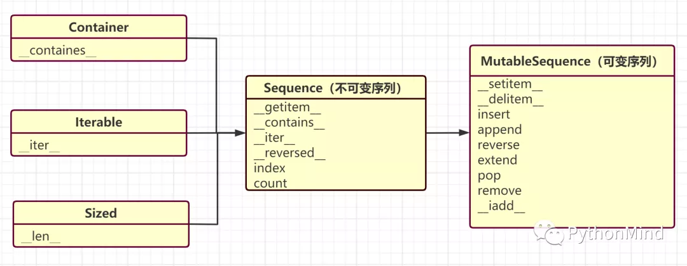

本书作者：测试开发刚哥，文章版权归个人所有，未经授权请勿转载。
序列
序列是指一组数据，按存放类型分为容器序列与扁平序列，按能否被修改分为不可变序列与可变序列。
容器序列与扁平序列
容器序列存放的是对象的引用，包括list、tuple、collections.deque。
扁平序列存放的是对象的值，包括str、bytes、bytearray、memoryview和array.array。
扁平序列的值是字符、字节和数值这种基础类型。
不可变序列与可变序列
不可变序列，包括tuple、str、bytes。
可变序列，包括list、bytearray、array.array、collection.deque、memoryview。
下图左边是父类，右边是子类，可以看出可变序列是从不可变序列继承来的，扩展了可变方法：

列表推导
Python 语言魅力在于简洁，这能从最常见的创建列表体现出来，比如我们想把字符串"abc"转换成新列表["a", "b", "c"]，常规写法：
symbols = "abc"
codes = []
for symbol in symbols:
codes.append(symbol)
print(codes) # ["a", "b", "c"]
用到了 for 循环和列表 append 方法。实际上可以不用 append 方法，直接：
symbols = "abc"
codes = [symbol for symbol in symbols]
这叫做列表推导，是更加 Pythonic 的写法。
无论是编写效率还是可阅读性，列表推导都更胜一筹，可以说是构建列表的快捷方式。但是不能滥用，通用原则是，如果列表推导的代码超过了两行，就要考虑用 append 了。这不是规定，完全可以凭借自我喜好来选择。
笛卡尔积是指多个序列中元素所有组合，我们用列表推导来实现笛卡尔积：
colors = ["black", "white"]
sizes = ["S", "M", "L"]
tshirts = [(color, size) for color in colors for size in sizes]
一行代码搞定！Life is short，use Python，list comprehension is wonderful，amazing。
注意这行代码有两个 for 循环，等价于：
for color in colors:
for size in sizes:
运行结果是：
[('black', 'S'), ('black', 'M'), ('black', 'L'), ('white', 'S'), ('white', 'M'), ('white', 'L')]
如果换一下顺序：
[(color, size) for color in colors for size in sizes]
等价于：
for size in sizes:
for color in colors:
运行结果是不同的，观察第 2 个元素：
[('black', 'S'), ('white', 'S'), ('black', 'M'), ('white', 'M'), ('black', 'L'), ('white', 'L')]
生成器表达式
一般接触到生成器时，都要讲yield关键字，看似有点复杂，然而却很简单，生成器就像列表推导一样，只不过是用来生成其他类型序列的，比如元组：
symbols = "abc"
codes = (symbol for symbol in symbols)
它的语法非常简单，把列表推导的中括号[]换成小括号()，就可以了。
语法相似，本质上却有很大区别，我们试着用生成器表达式来实现笛卡尔积，看看会有什么变化：
colors = ["black", "white"]
sizes = ["S", "M", "L"]
tshirts = ((color, size) for color in colors for size in sizes)
运行结果是：
<generator object <genexpr> at 0x000001FD57D2DB30>
generator object，结果是一个生成器对象。因为生成器表达式在每次迭代时才会逐个产出元素，所以这里的结果并不是已经创建好的元组。列表推导才会一次性产生新列表所有元素。
通过迭代把生成器表达式结果输出：
for tshirt in tshirts:
print(tshirt)
('black', 'S')
('white', 'S')
('black', 'M')
('white', 'M')
('black', 'L')
('white', 'L')
生成器表达式可以提升程序性能，比如要计算两个各有 1000 个元素的列表的笛卡尔积，生成器表达式可以帮忙省掉运行 for 循环的开销，即一个包含 100 万个元素的列表。
yield 作用和 return 差不多，后面会讲到。
Tips
本小节内容是我看《流畅的 Python》第一遍时记录的知识点：
- Python 标准库用 C 实现了丰富的序列类型。
- 列表推导，就是指
a = [x for x in something]这种写法。 - 生成器表达式用于生成列表外的其他类型的序列，它跟列表推导的区别仅仅在于方括号换成圆括号，如
b = tuple(x for x in something)。 array.array('I', x for x in something)，array 构造方法的第一个参数指定了数组中数字的存储方式。for tshirt in [c, s for c in colors for s in sizes]，列表推导会一次性生成这个列表，存储在内存中，占用资源。for tshirt in ('%s %s' for c in colors for s in sizes)，生成器表达式只在循环时逐个产出元素，避免额外的内存占用，省掉了运行 for 循环的开销。
小结
本文首先介绍了序列的概念，然后演示了 Python 常规骚操作——列表推导，最后引出了生成器表达式这个看似复杂实则简单的语法。列表是可变的，它有个不可变的孪生兄弟，元组。
参考资料：
《流畅的 Python》